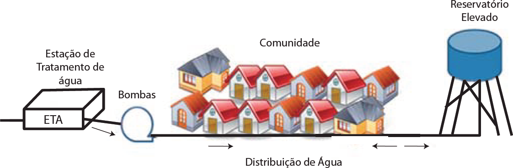

Os reservatórios de distribuição de água constituem elementos importantes em sistemas de abastecimento de água. Além de atenderem a diversas finalidades, são elementos visíveis e de maior destaque no sistema de distribuição e têm como finalidade o atendimento às variações de consumo e às variações de pressão na rede de distribuição.
Considerando a importância dos reservatórios de água, foi apontado que, para atender à comunidade representada na figura abaixo, é necessário fluxo máximo de 10 m³/h de água durante 10 horas em um dia de pico, começando às 8h e terminando às 18h. Durante as demais 14 horas, o fluxo deve ser de 2 m³/h. Durante as 24 horas, a Estação de Tratamento de Água (ETA) é capaz de fornecer um fluxo constante de 6 m³/h, que é bombeado ao sistema de distribuição.
TSUTIYA, M. T. Abastecimento de Água - São Paulo: Departamento de Engenharia Hidráulica e Sanitária da Escola Politécnica da Universidade de São Paulo, 2006.
Considerando as informações apresentadas, assinale a opção que apresenta o cálculo do volume do reservatório em nível elevado para satisfazer a demanda. Após realizar o cálculo, arredonde o valor bara o número inteiro mais próximo.